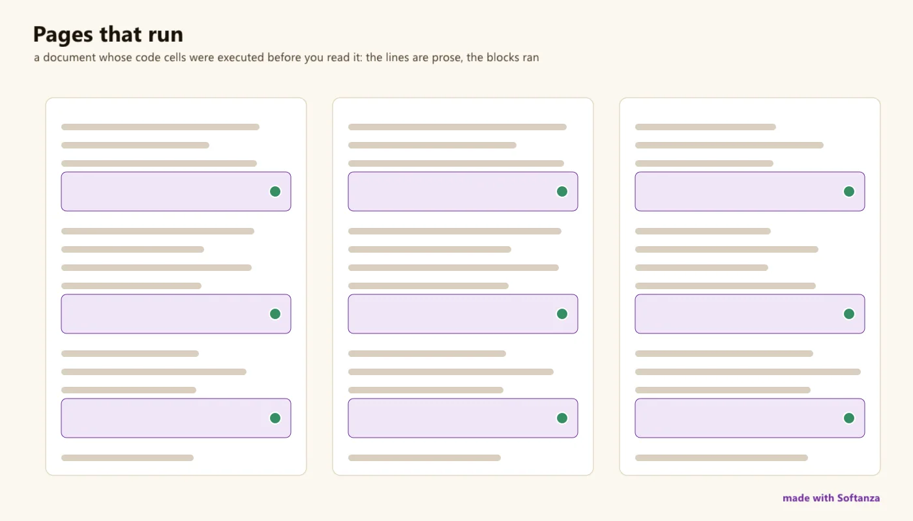

Système de documentation
La documentation s'exécute au lieu de s'écrire ; la bibliothèque se documente elle-même et répond aux questions ; les plans consignent ce qui a été livré ; ni site, ni référence générée.
3 Strong · 6 Solid · 2 Partial · 1 Emerging
Mesuré contre : Sphinx · rustdoc · MkDocs · literate programming · Dossiers : base/doc · base/meta · base/reflect · Le guide des fonctions de ce domaine

Repensé depuis les premiers principes
Ce que Softanza a gardé de ce qui marche, et ce qu'elle a repensé, tel que la bibliothèque l'a écrit dans ses documents de conception et ses narrations.
La manière SoftanzaLa documentation s'exécute, elle ne se contente pas d'être écrite : chaque exemple montre une vraie sortie, et la bibliothèque s'explique à partir de son propre code.
Gardé des meilleures pratiques
- Plusieurs portes pour plusieurs lecteurs : des recettes d'une ligne pour les pressés, des narrations pour les amateurs d'histoires, des références, des analyses de fond et une FAQ. source
- De simples fichiers markdown, rangés avec le code et hébergés sur GitHub, pour une documentation légère et accessible. source
- Chaque méthode est décrite là où elle vit, par un commentaire dans le code source, et des en-têtes de section regroupent les méthodes par capacité. source
Repensé
- Les narrations expliquent une idée comme une histoire, avec du vrai code. Chaque bloc de sortie est la sortie réelle d'une exécution, et un test la maintient exacte. source
- Un chapitre ne stocke aucune sortie. Chaque cellule promet ce qu'elle affiche, toutes s'exécutent dans un processus neuf, et une promesse fausse est détectée, pas cachée. source
- On interroge la bibliothèque en langage courant, et elle répond à partir des commentaires de son propre code, sans grand modèle de langage : le savoir y est déjà. source
- Les noms de méthodes suivent une grammaire : HowTo compose un nom depuis l'intention, le vérifie parmi les méthodes réelles, sinon cherche par le sens. source
Documentation is not a module in Softanza; it is a discipline built into how the library is made, and its signature is that the docs are run, not written, and the library can document itself. 134 literate narrations teach through stories whose every code-and-output block is produced by a real executed demo; the library answers Ask() / HowTo() / ExplainMethod() about its own API deterministically; 2,956 files carry inline #--> promises a harness checks; ~63 plans-of-record record what actually shipped. Where it is thin: no published doc site, no generated API reference, no measured coverage, and its own overview has drifted behind the system it describes.
Ce qu'un maker en fait, et ce qui se distingue
- The docs are run, not written: 134 narrations whose every block is produced by an executed demo
- The library documents itself: Ask() / HowTo() / ExplainMethod() are deterministic and zero-hallucination
- Design docs that record what actually shipped, not just what was intended
- Self-illustrating figures drawn by the thing being documented
Ce qui est dû
- A published doc site (MkDocs / Docusaurus over the existing markdown)
- Generate the API reference from the stzReflectFuncs harvester
- Refresh the system overview (5 pillars vs 9 surfaces) and widen the self-doc corpus beyond 2 classes
- Measured doc coverage, and docs wired into CI
La manière Softanza, exécutée
Ce que Softanza fait autrement dans ce domaine, montré par du code tiré de ses narrations et de ses gardes, et exécuté pour cette page.
À la question « comment retirer les doublons », la bibliothèque compose le nom de la méthode grâce à sa propre grammaire de nommage, et le dit.
oDoc = StzSelfDocQ("stzList")
? oDoc.HowTo("remove duplicates")
? oDoc.HasMethod("DuplicatesRemoved")Q([...]).RemoveDuplicates() -- composed by grammar (remove duplicates) 1
exécuté le 2026-10-01 21:18 dans la bibliothèque au commit 0e72e2e2c ; tiré de base/education/program/courses/elementary-introduction/chapters/13-the-gap-question.en.md
La bibliothèque explique une méthode à partir du commentaire de son code, et refuse franchement une méthode qui n'existe pas au lieu d'en inventer une.
oDoc = StzSelfDocQ("stzList")
? StzLeft( oDoc.ExplainMethod("DuplicatesRemoved"), 20 )
? oDoc.ExplainMethod("NoSuchThing")DuplicatesRemoved -- No method 'NoSuchThing' in stzList.
exécuté le 2026-10-01 21:18 dans la bibliothèque au commit 0e72e2e2c ; tiré de base/education/program/courses/elementary-introduction/chapters/13-the-gap-question.en.md
Les couloirs, un par un
Les couloirs et leurs notes sont cités tels qu'ils ont été lus à la source, le Read from the source on 2026-09-17, from a read-only main worktree -- base/doc/narrations (134), base/meta/stzSelfDoc + stzLibDoc, base/reflect/stzReflectFuncs, base/meta/promises.py over 2,956 #--> files, base/doc/design (44) + SOFTANZA_*_PLAN.md, and stz-doc-system-overview.md.